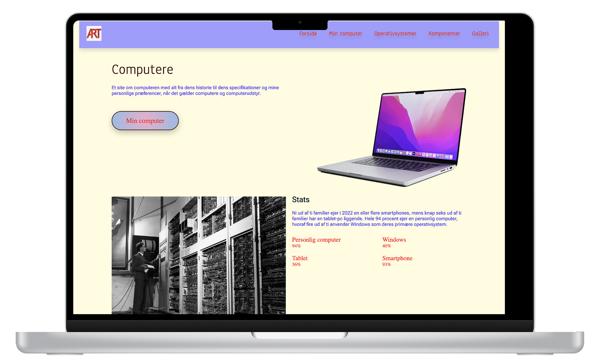
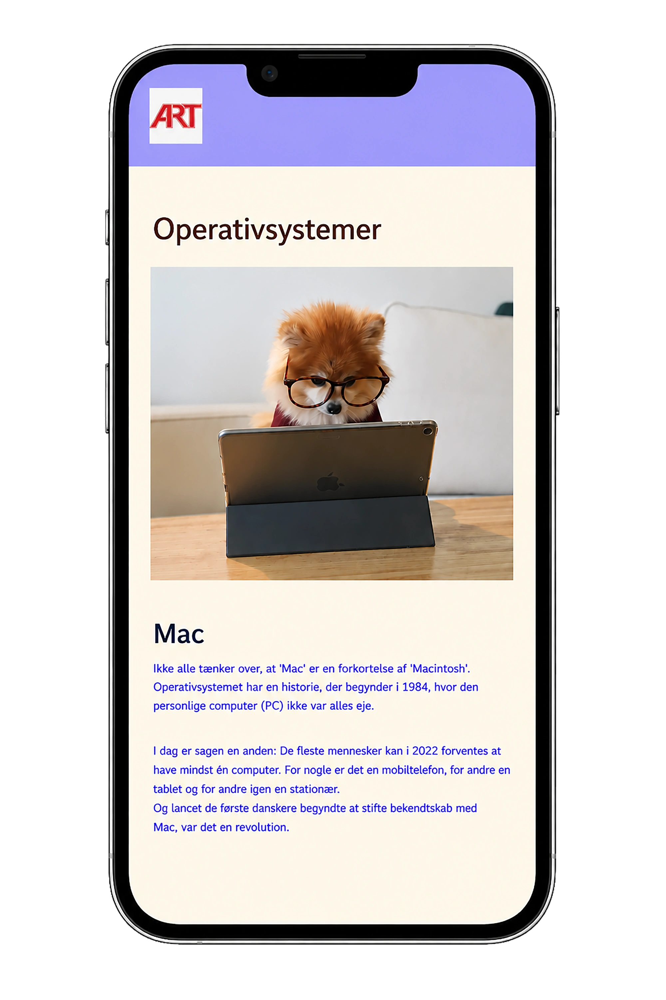
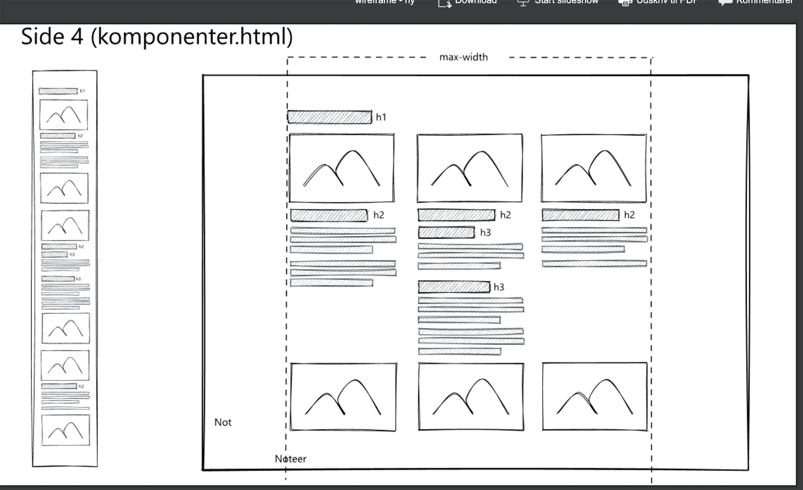
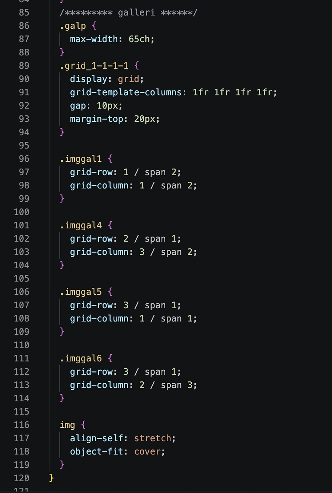
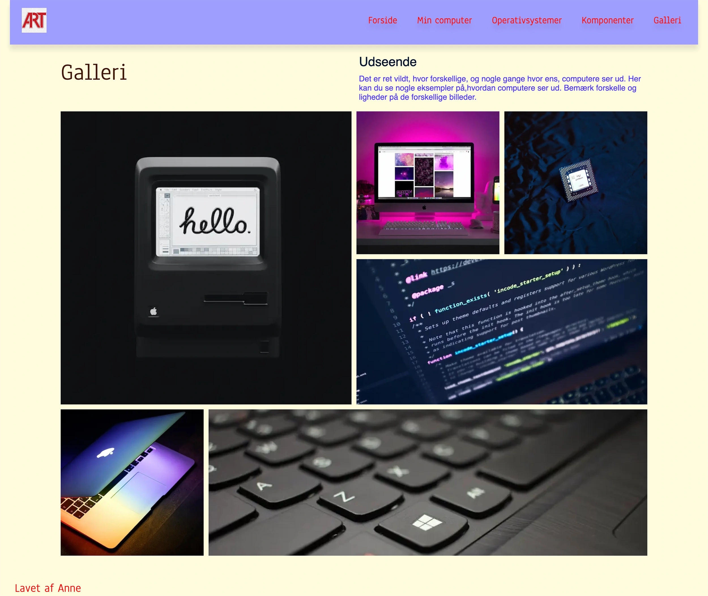

Projekter
02 Web
Studiestartsprøven


Løsning
Jeg har udviklet et responsivt website i HTML og CSS, tilpasset både mobil og desktop. Sitet er bygget ud fra et givent wireframe og layoutdiagram og indeholder. Projektet er til slut oploaded via GitHub.



Proces
Under udviklingen arbejdede jeg med valg af farver, typografi og struktur for at skabe et læsbart og brugervenligt site. Derudover arbejdede jeg med tekstopsætning, gridopsætning, og med at få tingene til at stå ligesom layoutdiagrammet viste.
Reflektion
Jeg fik føling med samspillet mellem HTML og CSS, og hvordan struktur og styling arbejder sammen. Jeg fandt ud af hvor stor betydning valg af typografier, farvesammensætning og layout har for brugeroplevelsen. Jeg lærte at det altid hedder mobile-first og derefter desktop. Opsætning af billeder vha. grid var en øjenåbner. Jeg fik erfaring med at publicere et website via GitHub og gøre det tilgængeligt online.